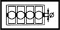

MAIN BEARING CAPS
- Path
- Technical Data > Manufacturing data > 10 ENGINE > 1004 ENGINE AND POWER UNIT > MAIN BEARING CAPS
- Kind
- technical data / specifications
- Applies to
- all engines; all production periods
- Interactive page
- https://sloeber94.github.io/elrnDB-a156/en/#/3233503
Applies to: all engines; all production periods
Main bearing seat diameter (mm) | Validity |  | ||
|---|---|---|---|---|
56.705 - 56.718 | [d] | |||
Main bearing seat diameter (mm) | Validity | |||
56.705 - 56.718 | 1.8 TS 1.6 TS | |||
Main bearing seat diameter (mm) | Validity | |||
63.691 - 63.732 | 2.4 JTD 10v | |||
Main bearing seat diameter (mm) | Validity | |||
Category B | Category C | Classe A | ||
63.663 ÷ 63.669 | 63.669 ÷ 63.675 | 63.657 ÷ 63.663 | 2.5 V6 | |